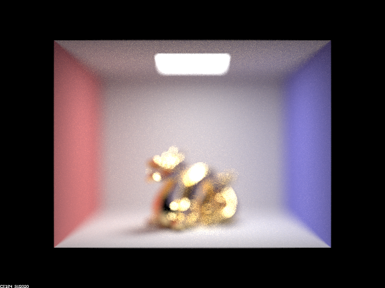
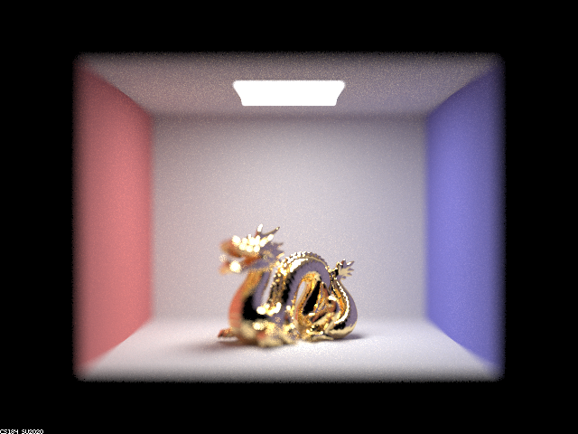
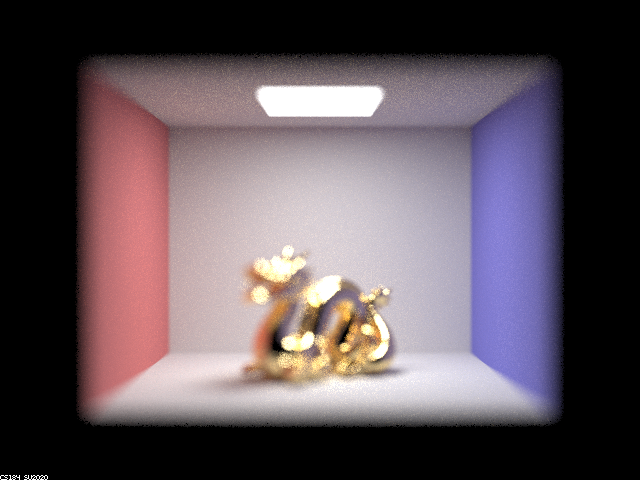
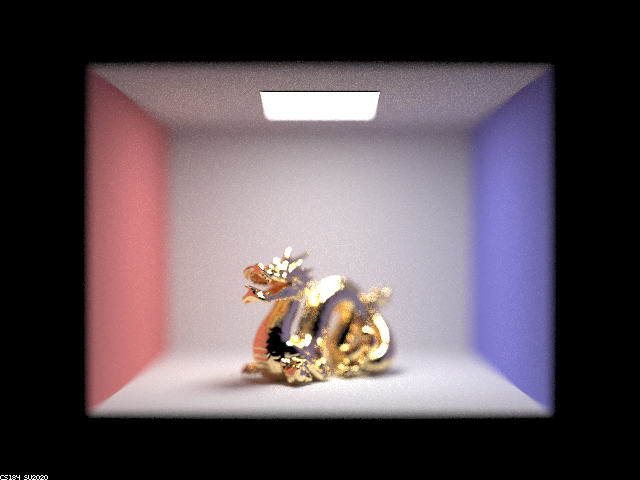
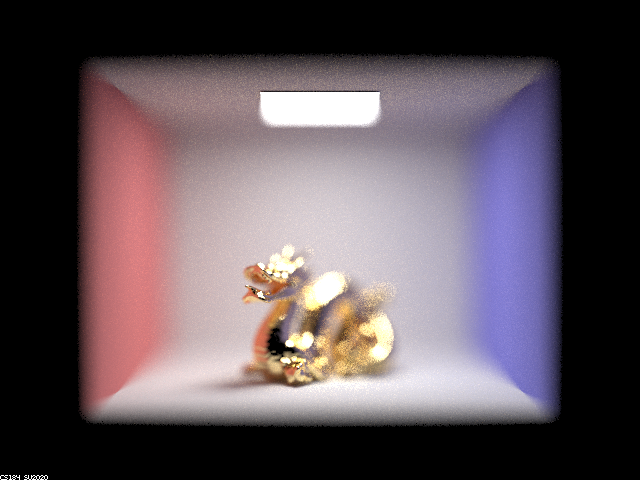
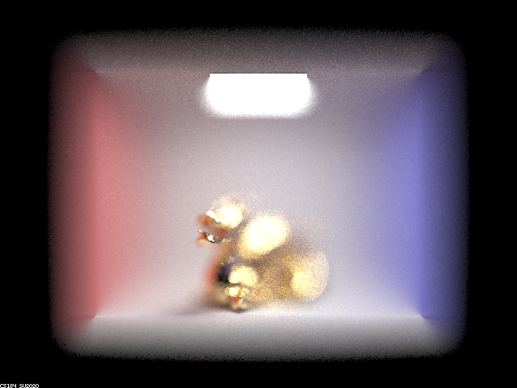

max_ray_depth set to 1

max_ray_depth set to 2

max_ray_depth set to 3

max_ray_depth set to 4

max_ray_depth set to 5

max_ray_depth set to 100

Each of the six images was rendered with 64 samples per pixel and 4 samples per light.
max_ray_depth set to 0
max_ray_depth set to 1
max_ray_depth set to 2
max_ray_depth set to 3
max_ray_depth set to 4
max_ray_depth set to 5
max_ray_depth set to 100
When max_ray_depth is equal to 0, there is no light rays bouncing off, so we can only see the light source, and we cannot see the spheres. When max_ray_depth is equal to 1, we can see that the walls and the outlines of the sphere. When max_ray_depth is equal to 2,
When light passes through the pinhole, only the chief ray - which is the ray that passes through the center of the aperture - is able to reach the imaging surface. This is because the opening is very small and any other ray that is not in line with the chief ray will be blocked by the edges of the hole. As a result, the image formed by a pinhole camera is typically sharp, but it is also relatively dim, as only a small amount of light is able to pass through the aperture. Additionally, because the size of the aperture is fixed, there is no way to adjust the depth of field or focus of the image. On the other hand, a thin lens is able to accommodate not only the chief ray but also a range of parallel rays that pass through the lens. This allows the thin lens to form a brighter and more detailed image, as more light is able to pass through the lens and reach the imaging surface. Thin lenses are able to control the blurriness of an image by changing their focal length, which is the distance between the lens and the point where the light is focused. By adjusting the focal length, a thin lens can change the position of the focused image and thus control the depth of field and focus of the image.
As the depth increases, the focus of the image moves from in front of the dragon to behind. When depth is 4.5, it puts the focus on the dragon. When the depth decreases/increases, the dragon becomes out of focus and blurry.
  As the aperture size increases, the image becomes more blurry and depth of field decreases.
  